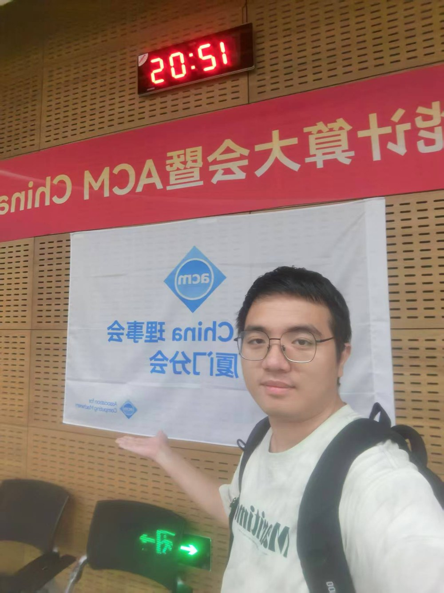

Open-set Recognition
Detecting known and unknown underwater acoustic categories in realistic recognition settings.
Underwater Acoustic Intelligence
I study how deep learning and generative models can recognize underwater acoustic signals under low-SNR, open-set, and real-world uncertainty.
About
I am a master's student at the School of Informatics, Xiamen University, affiliated with the Key Laboratory of Underwater Acoustic Communication and Marine Information Technology, Ministry of Education.
My current work explores underwater acoustic recognition systems that remain reliable when the environment is noisy, labels are incomplete, and unknown categories appear during deployment.

Research
Detecting known and unknown underwater acoustic categories in realistic recognition settings.
Using graph-enhanced conditional diffusion to model category relationships and improve robustness.
Deploying acoustic recognition models on compact computing platforms for ship-radiated noise analysis.
News
Publications
Projects
Graduate Electronic Design
An edge-intelligence system for underwater ship-radiated noise recognition, built with acoustic signal acquisition, Phytium Pi, Jetson Nano, and deep learning inference.
Provincial Innovation Project
A robotics project using HT32F52352 and OpenMV for color and shape recognition, completed as project lead and awarded in a provincial MCU design contest.
Experience
Master's student in Communication Engineering, School of Informatics. GPA: 3.8/4.0.
Bachelor's degree in Communication Engineering, College of Marine Information Engineering. GPA: 3.84/4.0. Recommended for postgraduate admission without entrance examination.
Completed international programs in data analysis, computer science, information and communication engineering.
Honors
National Graduate Mathematical Modeling Contest second prize; China Graduate Electronics Design Contest third prize; Graduate AI Innovation Contest third prize; first-class academic scholarships.
Matlab, Python, C, Java, LaTeX, Office, Notion. CET-4: 540, CET-6: 462.